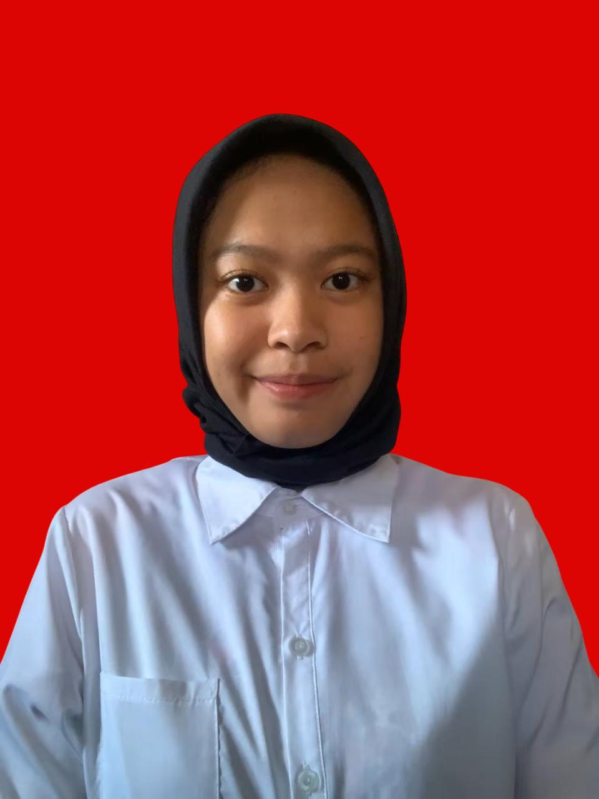

|
 |
Nama | : Reva Almeila Putri |
| Status | : Mahasiswa | |
| Program Studi | : Informatika | |
| Perguruan Tinggi | : Institut Teknologi Nasional Bandung (ITENAS) | |
| : @reva.almeila.mhs.itenas.ac.id |
Saya adalah mahasiswa Program Studi Informatika di Institut Teknologi Nasional Bandung (ITENAS). Saya memiliki ketertarikan pada bidang teknologi informasi, pemrograman, pengembangan website, serta pengolahan data. Selama perkuliahan, saya terus mengembangkan pengetahuan dan keterampilan melalui kegiatan akademik, proyek, organisasi, dan berbagai kegiatan lainnya.
| Tahun | Institusi Pendidikan |
|---|---|
| 2025 - Sekarang |
Institut Teknologi Nasional Bandung (ITENAS)
Program Studi Informatika |
| 2022 - 2025 | SMAN 1 Cicalengka |
| 2019 - 2022 | SMPN 1 Rancaekek |
Email: @reva.almeila.mhs.itenas.ac.id
GitHub: github.com/revaalmeila
LinkedIn: linkedin.com/in/reva-almeila-putri
Instagram: instagram.com/revaalmeilaa
TikTok: tiktok.com/@rffalme
Reva Almeila Putri
2026